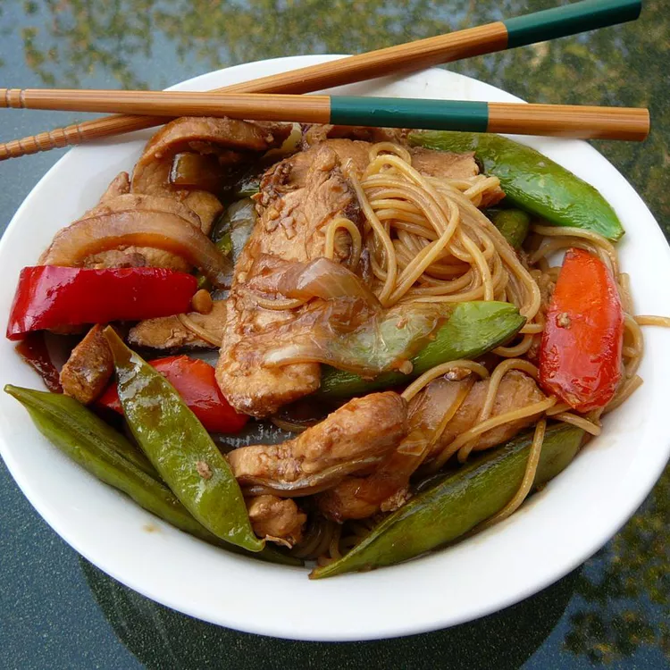

Pork Lo Mein
Home

This pork lo mein recipe was inspired by another recipe, but I added more vegetables, ginger, and sesame oil.
Add or remove veggies as you see fit.
Approximate cooking time: 30 mins
Ingredients:
- 1 (8 ounce) package linguine
- ⅓ cup low-sodium soy sauce
- 2 tablespoons rice vinegar
- 2 teaspoons cornstarch
- 1 teaspoon white sugar
- ½ teaspoon sesame oil
- 2 tablespoons canola oil
- 2 cups snap peas
- 1 small sweet onion, chopped
- 1 (12 ounce) pork tenderloin, cut into thin strips
- 1 (8 ounce) package sliced white mushrooms
- 1 medium red bell pepper, chopped
- 3 cloves garlic, chopped, divided
- ½ teaspoon chopped fresh ginger, or to taste
- 3 green onions, sliced
Steps:
-
Bring a large pot of lightly salted water to a boil; cook the linguine at a boil until tender yet firm
to the bite, 8 to 9 minutes; drain.
-
Meanwhile, whisk soy sauce, vinegar, cornstarch, sugar, and sesame oil together in a small bowl.
-
Heat canola oil in a large skillet over medium-high heat. Add snap peas and onion; cook and stir until
onion is translucent, about 2 minutes. Add pork, mushrooms, red bell pepper, 1/3 of the garlic, and
ginger; cook until pork is no longer pink, about 2 minutes.
-
Add remaining garlic to the skillet and cook until fragrant, about 1 minute. Pour in soy sauce mixture;
cook and stir until sauce thickens, about 1 minute. Remove from the heat.
-
Stir linguine into the skillet until coated; sprinkle green onions over top.
Back